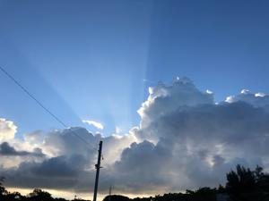
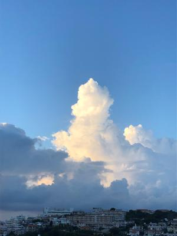

うるがいの話 ある日
最新: 横棒（ー）
うるがいとは 前提知識です
カニの画像をクリックすると『うるがいの話』サイトを表示します
うるがい(ｳﾙｶﾞｲ urugai)とは、『もずくがに』の名前でとても大きくなります。
たながー（ﾀﾅｶﾞｰtanagaa）とは手長えびのことで、何種類かあり大きいのは車 エビぐらいになります。
ぶながー(bunagaa)とは、赤い髪の毛、赤い身体、そして身長は１ｍ２０ｃｍ ぐらい、川の蟹を食べているの目撃された。場所は沖縄県国頭郡大宜味村のと ある村僕の隣近所に住んでいる爺さんから、聞いた話です。
2021年09月02日 (木）
横棒（ー）
16:41


「ぶながーの話」
のサイトを設けたが、検索サイトでは一覧に載らない。たま
たま、横棒（ー）を入れないで検索すると一覧に載った（ただし、再現できな
いが）。文言に「ー」を入れると検索では好ましくないかも。私の村で「ぶな
がー」と言うがネットでは「ぶながや」の里｜大宜味村などと「ー」が「や」
になっている。「うるがい」が「うりがい」と同じ村内でも違うし。いま、青
切りでニュースで報道されている「シークヮー」、ん！、私のところでは「シ
ーカーサー」、ネットでは「シークワーサー」、「シークワサー（シークヮー
サー）」もある。テナガエビの「タナガー」は、ネットでは一応これだけ。猫
は「マヤー」だけである。「わん」、「やー」、「わたー」、「いたー」は「
私」、「あなた」、「私達」、「あなた達」である。ネットではズバリ探せな
かった。そうだろうな、方言は隣の村でも違うぐらいだから。糸満育ちの父親
と大宜味村の母親を持つ私は、実は両方の方言がわかる（聞き取れるだけ、喋
れないが）のである。で、だから何なんだということだが、「ぶながー」から
「ぶながぁ」に変えてみようと考えた。ところで、ぁぃぅぇぉの小さい文字を
何というのだろうと調べてみたら、
公式的な文字として認定されていないよう
とのこと。ふむふむ、ま、やってみるか。ところ、ヤフー検索で
『ぶながの話
bunagaa』で検索する
と、『うるがいの話 ある日』と『うるがいの話』以外
にやばそうなサイトがある。
これらのサイトへは行ってはいけない！
外では久々に大雨が降っている、しめしめ、これで水を撒かなくて済む。